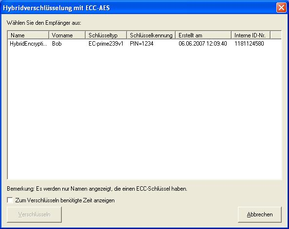
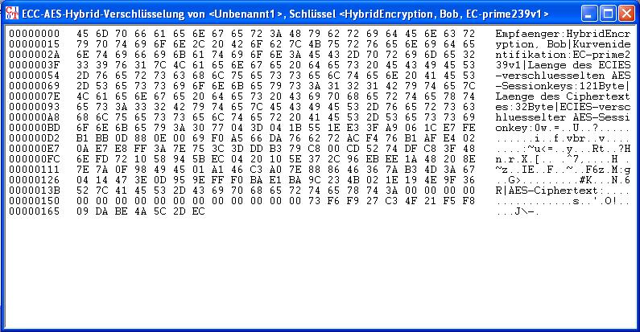

In diesem Dialog können Sie den auf Elliptischen Kurven (ECC) basierten öffentlichen Schlüssel des Empfängers wählen. Damit wird dann der Sessionkey verschlüsselt, der verwendet wurde, um mit dem symmetrischen AES-Verfahren das Dokument zu verschlüsseln.
Der dazu verwendete ECIES-Standard nutzt ECDH- und AES-Verfahren. Die Hybridverschlüsselung ist das am weitesten verbreitete Verfahren, Daten verschlüsselt zu übertragen. Weitere Informationen zur Hybridverschlüsselung finden Sie im Skript.
Um ein Dokument mit ECIES zu verschlüsseln, ist es nötig, dass ein ECC-Schlüsselpaar vorliegt. Wenn Sie noch keinen asymmetrischen Schlüssel angelegt haben, müssen Sie das vor dem Aufruf des Dialogs ECIES-Hybridverschlüsselung tun [ein Benutzer Bob mit dem ECC-Schlüssel "Hybrid Encryption" wird standardmäßig mit ausgeliefert]:
Im Menü von CrypTool unter Digitale Signaturen/PKI \ PKI \ Schlüssel erzeugen finden Sie entsprechende Werkzeuge. Damit können Sie sich Ihr ECC-Schlüsselpaar erzeugen und in die interne Datenbank von CrypTool abspeichern.
Nun kann ein Dokument in CrypTool geöffnet werden und über den Menüpunkt Ver-/Entschlüsseln \ Hybrid \ ECC-AES-Verschlüsselung wird der Dialog für die Verschlüsselung gestartet.
Nach Auswahl des Schlüsselpaares wird durch einen Klick auf den Button Verschlüsseln das Dokument mit ECC-AES verschlüsselt.
Optional kann man sich die zum Verschlüsseln benötigte Zeit durch die Markierung der Checkbox anzeigen lassen.
Das verschlüsselte Dokument wird nun in CrypTool angezeigt:
Der Inhalt dieses Fensters dient auch als Grundlage für die Hybridentschlüsselung mit ECC-AES, die den gesamten Verschlüsselungsvorgang rückgängig machen kann.